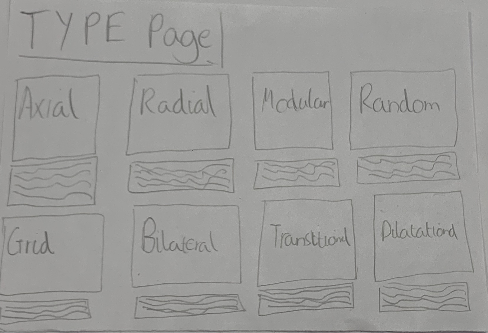
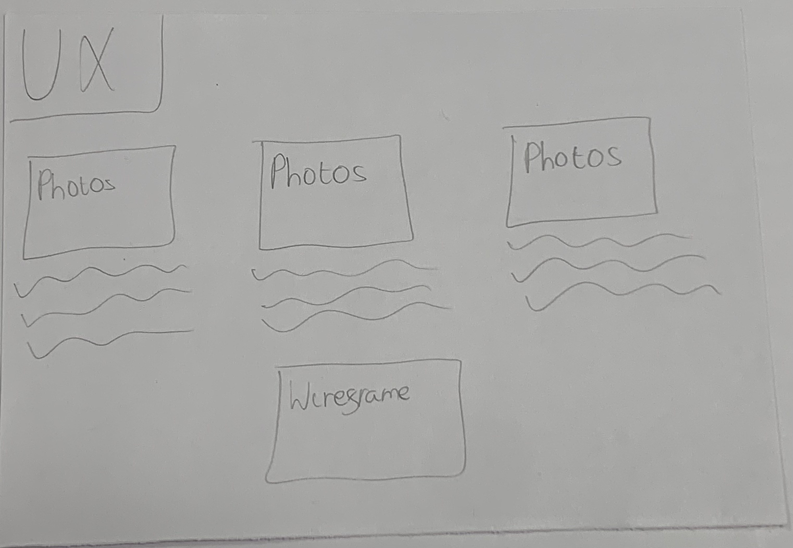
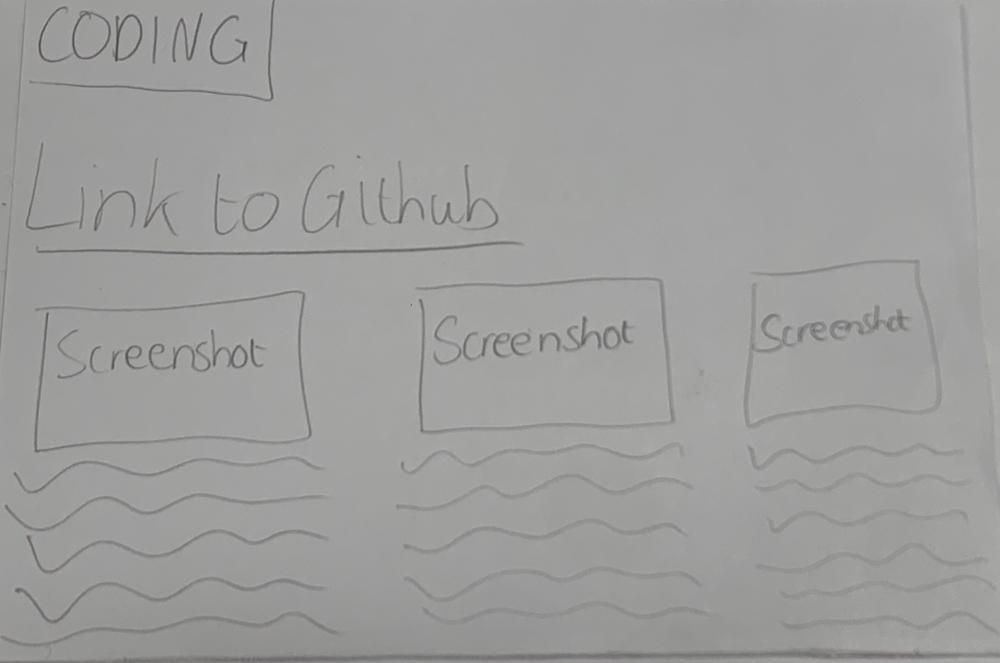
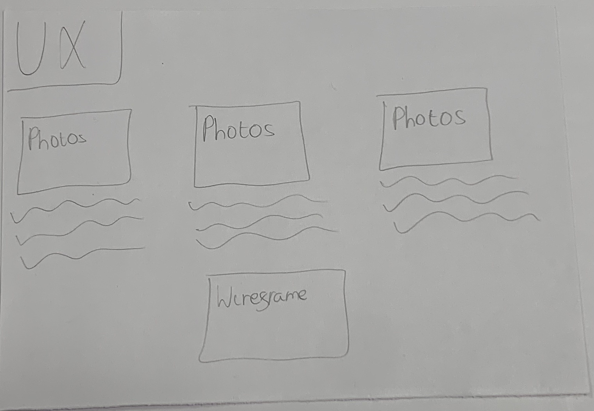
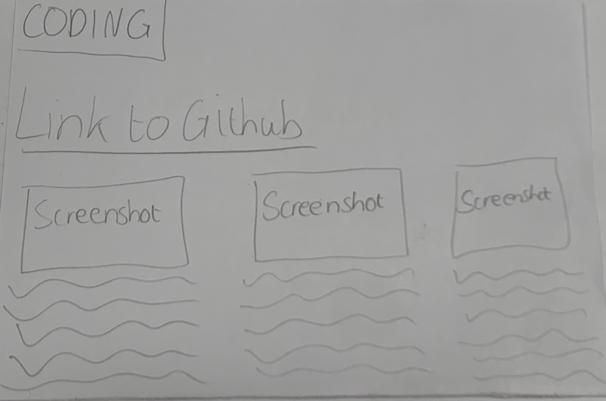

UX TASK
This first idea for my main page is similar to how my website has turned out aside from where the image of me has been placed on my webpage itself. The reason why it has been designed in this manner initially is because I wanted an easy-to-use website with clear signs and symbols to will direct you to each webpage. My name is at the top of the screen as so to indicate immediately to the user who's website it is.
This next image is my
 



FLOWCHART
STRATEGY AND SCOPE
My portfolio website contains all of the information to be handed in for the first semester of Graphic and Web Design whilst studying at UWE. My website is being targeted at people who are my age such as peers of the class, as well as the people who are marking my work; Mic Palmer, Mary Jackson. The goals of this website are to make a friendly and usable interface that anyone can use and direct themselves easily around with clear titles/headings that allow efficient access to each section. Another goal is to demonstrate a clear understanding of basic usage of website coding as well as showing what we’ve been asked to do. My website will function using GitHub and being coded on Visual Studio Code, this is using HTML and CSS to style the websites, it should function after being made into a repository on GitHub. It functions by having a main page and then links that lead to another subpage that shows the relevant work I have completed, as well as this I have text you can press that has hyperlinks in it that go to other pages such as the Coding pages. The requirements I have for this website is the work that I have been set, which can be put into four sections; Typography page, Coding page, UX page and the CARP Posters page, as well as this I have been required to make sure that there is a constant clear scheme between the pages and the layouts are similar to establish continuity. I have been asked to furthermore add in reflection paragraphs for the work I have provided as an explanation as to why I have done my work the way I have done it given the task provided.